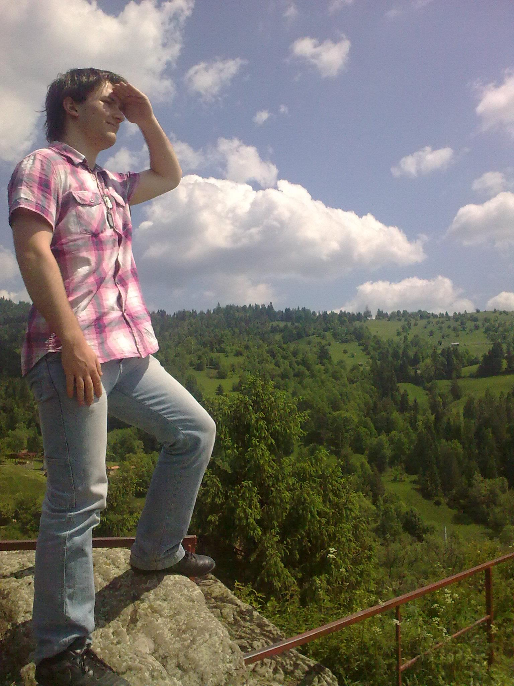

Rólam
Ki is voltam és vagyok?
Kling József vagyok, jelenleg energetikai mérnöknek tanulok a BME-n. Már óvódásként is tudtam, hogy mérnök leszek (egyszer). Azonban nagyon nehezen ment érettségi után minden.

Minden évemre jutott valamilyen tragédia egy szülői válás, három költözés, négy családtag halála, pénzügyi gondok és fedélhiánya. Ezek ellenére 2014 óta még mindig ragaszkodok ahhoz, hogy be fogom fejezni a Gépész Karon az energetikai mérnök képzést, amiről annak idején 2 pont hiány miatt lecsúztam és 5 évig a gépész szakon tanultam. De a mechanikai szigorlat beverte az utolsó szöget is ebbe a próbálkozásomba, ami után szakot váltottam.
Tragédiám
Tudom minden ember küzd nehézségekkel. Egy ókori bölcselet szerint ha mindki baját egy zsákba raknánk és onnan mindenki egyenlő féleképpen kapna újat, akkor mindenki hamar visszakérné a sajátját. Nem kívánom, így másnak sem az enyémet és másét sem. Nekem életem összes fájdalma egyetemi éveire öltött formát. Egészen érettségi minden ideálisan és jól alakult, de azután...
Édesapám azzal ajándékozott meg egyetemi első napon előtt, hogy bejelentte elválik édesanyámtól, aki ezután kivitt a vasútállomásra. Azt hiszem ezt a pillanatot sosem fogom elfelejteni, ahogy édesanyám megrendült arccal búcsúztatott a vasútállomáson. Ezt pedig számos újabb váratlan esemény követte.
Bár nem így képzeltem el az egyetememet és sokszor el is hasaltam az évek alatt, de nem adtam fel és sosem fogom. Befejezem az egyetemet és okleveles mérnök leszek!
